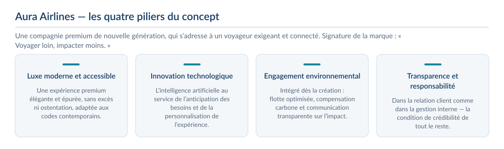
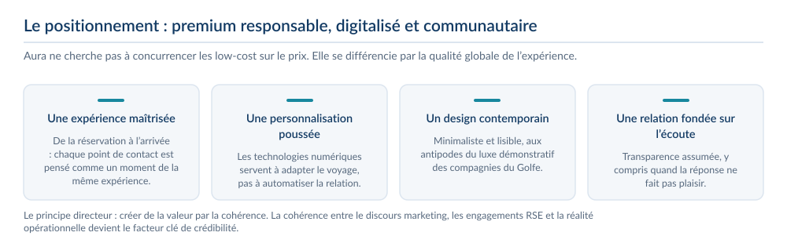
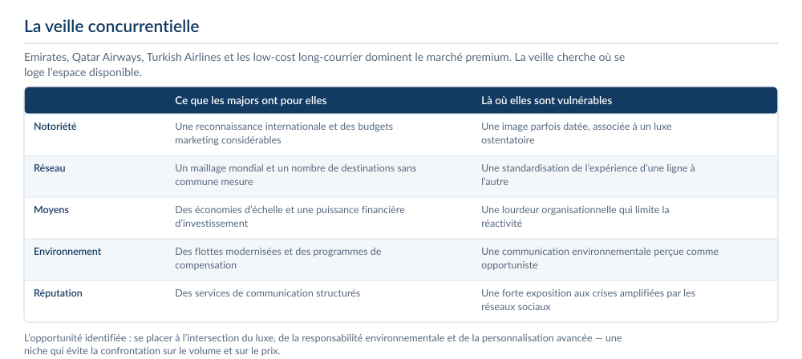
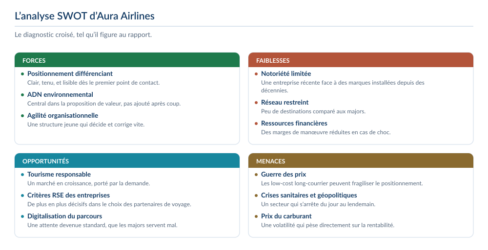
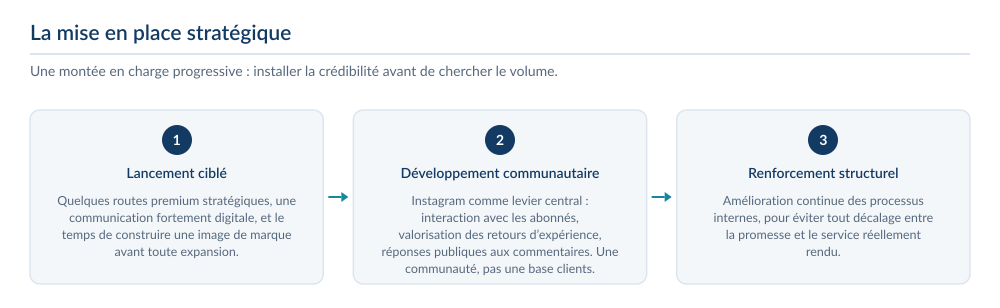
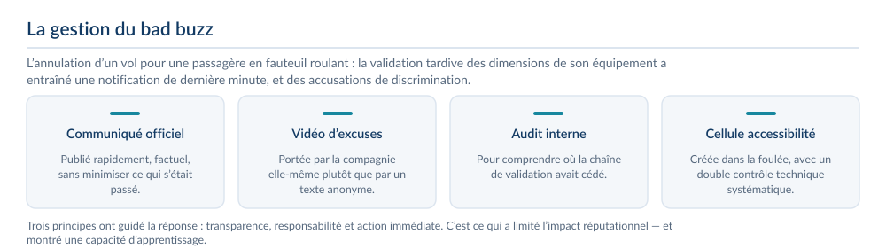

1compagnie aérienne créée
4piliers stratégiques
2phases de déploiement
1crise simulée et gérée
Le contexte et la commande
- SAE S6.02 : créer une entreprise fictive et piloter son image en ligne, de la ligne éditoriale à la gestion de crise.
- Projet Aura Airlines : une compagnie aérienne premium, positionnée sur l’expérience client et la personnalisation par l’intelligence artificielle.
- Terrain d’observation : Emirates, Qatar Airways, Turkish Airlines et les compagnies low cost.
La problématique
Construire l’identité stratégique d’une entreprise, analyser son environnement concurrentiel et mettre en place une stratégie de communication digitale.
Le concept et le positionnement
- Aura Airlines est conçue comme une réponse aux mutations du marché aérien : un voyageur moderne, exigeant et connecté, qui ne dissocie plus confort, technologie et responsabilité.
- Quatre piliers structurent le concept : un luxe moderne et accessible sans ostentation, une innovation technologique fondée sur l’intelligence artificielle, un engagement environnemental intégré dès la création, et une culture de la transparence.
- La signature de la marque résume l’ambition : « Voyager loin, impacter moins. »
- Le positionnement retenu est un premium responsable, digitalisé et communautaire. Le principe directeur : créer de la valeur par la cohérence entre le discours marketing, les engagements RSE et la réalité opérationnelle.




La veille concurrentielle
- Le marché premium est dominé par Emirates, Qatar Airways et Turkish Airlines, auxquels s’ajoutent les low-cost long-courrier : notoriété internationale, économies d’échelle, réseau mondial et budgets marketing considérables.
- Leurs vulnérabilités sont ailleurs : une expérience client standardisée, une communication environnementale parfois perçue comme opportuniste, une lourdeur organisationnelle qui limite la réactivité, et une forte exposition aux crises amplifiées par les réseaux sociaux.
- L’opportunité identifiée : se placer à l’intersection du luxe, de la responsabilité environnementale et de la personnalisation avancée — une niche qui évite la confrontation sur le volume et sur le prix.


Le diagnostic
- Forces : un positionnement clair et différenciant, un ADN environnemental central dans la proposition de valeur, et une agilité organisationnelle que les majors n’ont pas.
- Faiblesses : une notoriété limitée, un réseau de destinations restreint et des ressources financières plus faibles.
- Opportunités : la croissance du tourisme responsable, l’intégration de critères RSE dans les choix des entreprises, et la digitalisation du parcours client.
- Menaces : la guerre des prix des low-cost, les crises sanitaires et géopolitiques, et la volatilité du prix du carburant.


La stratégie et la présence digitale
- Une montée en charge progressive : quelques routes premium pour installer l’image de marque, puis le développement communautaire, puis le renforcement des processus internes.
- Instagram est le levier central : interaction avec les abonnés, valorisation des retours d’expérience, réponses publiques aux commentaires. L’objectif est une communauté engagée, pas une simple relation transactionnelle.
- Les commentaires reçus révèlent un client impliqué : critiques sur les prix, remarques sur la réactivité, questions pratiques. La méthode adoptée — écoute active, réponse factuelle, assumption du positionnement premium — transforme le retour en levier de crédibilité.



La gestion de crise
- L’annulation d’un vol pour une passagère en fauteuil roulant : la validation tardive des dimensions de son équipement a entraîné une notification de dernière minute, de la frustration et des accusations de discrimination.
- La réponse a été rapide : communiqué officiel, vidéo d’excuses, audit interne, création d’une cellule dédiée à l’accessibilité et double contrôle technique systématique.
- Trois principes l’ont guidée : transparence, responsabilité et action immédiate. C’est ce qui a limité l’impact réputationnel.
- Ce que j’en retire : dans un secteur exposé, le moindre écart entre le discours et la réalité opérationnelle se paie en réputation. La solidité des processus internes compte autant que la qualité de la communication.



Ce que j’ai produit
- Identité de marque complète : nom, logo, charte visuelle et quatre piliers stratégiques.
- Veille concurrentielle structurée : positionnement, point fort et point faible de chaque acteur du marché.
- Présence digitale déployée — compte Instagram, visuels publicitaires et stratégie d’engagement de la communauté.
- Méthode de traitement des commentaires en quatre temps : remercier, répondre factuellement, expliquer sans se justifier, assumer le positionnement.
- Crise simulée — l’annulation d’un vol pour une passagère à mobilité réduite — et plan de réponse : communiqué officiel, vidéo d’excuses, audit interne et cellule accessibilité.
Ce que j’en retire
- Anticiper vaut mieux que réagir : une crise se prépare avant d’arriver.
- Une communication stratégique bien menée peut sauver une réputation.
- Toute crise correctement traitée devient une occasion de gagner en crédibilité.
Outils et méthodes mobilisés
InstagramLigne éditorialeVeille concurrentielleGestion de criseCanva